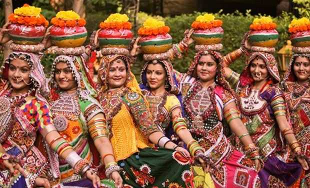

Welcome to Telangana!

Telangana, located in southern India, is known for its rich history, diverse culture, and dynamic traditions.
Formed as a separate state in 2014, Telangana has a distinct identity that blends the ancient heritage of the
Deccan plateau with vibrant modernity.
Festivals are a central part of Telangana’s cultural life. Bathukamma is a major festival celebrated by women,
involving the creation of flower stacks arranged in concentric circles, symbolizing life and mother goddess.
Bonalu, another significant festival, is dedicated to the goddess Mahakali and involves colorful processions,
dances, and the offering of special dishes to the deity. These festivals reflect the state's deep-rooted
traditions and communal harmony.
Telangana’s cuisine is known for its rich and spicy flavors. Hyderabadi Biryani, a world-famous dish, epitomizes
the culinary excellence of the region, combining aromatic basmati rice with marinated meat and spices. Other
popular dishes include Pesarattu (green gram dosa), Sarva Pindi (spicy rice flour pancake), and Haleem (a
slow-cooked meat and lentil stew). Telangana's cuisine is a fusion of Telugu and Hyderabadi culinary traditions,
offering a diverse gastronomic experience.
Music and dance are integral to Telangana’s cultural expression. The state is known for its traditional folk
dances like Perini Sivatandavam, a vigorous dance form dedicated to Lord Shiva, and Lambadi, performed by the
Banjara community. Classical music, particularly Carnatic music, also holds a significant place, with local
contributions enriching this ancient art form. These performances often feature traditional instruments like the
dhol, veena, and mridangam, creating a vibrant cultural atmosphere.
Telangana’s architectural heritage is a blend of ancient and medieval structures. The iconic Charminar in
Hyderabad, Golconda Fort, and the Qutb Shahi Tombs are remarkable examples of the state's architectural
brilliance. Temples like the Thousand Pillar Temple in Warangal and the Ramappa Temple, a UNESCO World Heritage
site, showcase intricate carvings and historical significance. These landmarks attract tourists and history
enthusiasts, highlighting the state's rich past.
The state’s handicrafts are renowned for their craftsmanship and variety. Pochampally ikat, a traditional weaving
style, produces beautiful sarees and fabrics with geometric patterns. Bidriware, a form of metalwork inlaid with
silver, and Nirmal paintings, depicting themes from Indian mythology, are also notable crafts. These handicrafts
not only represent the artistic heritage of Telangana but also contribute significantly to its economy.